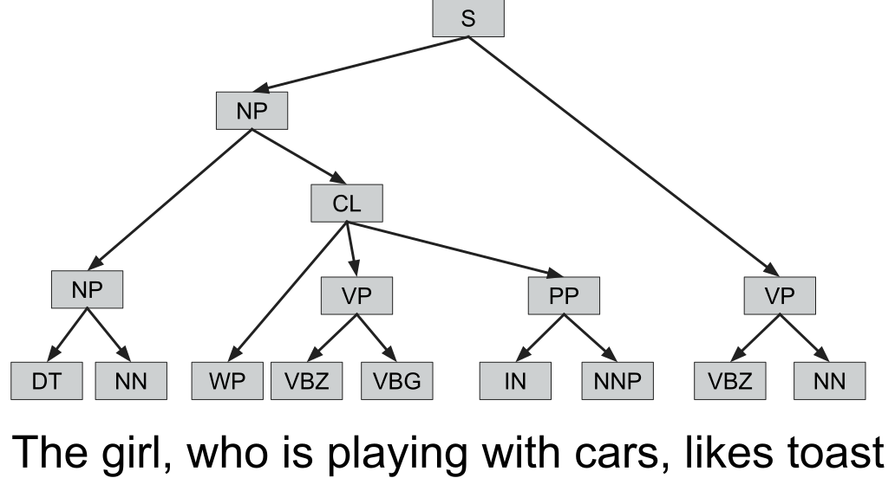
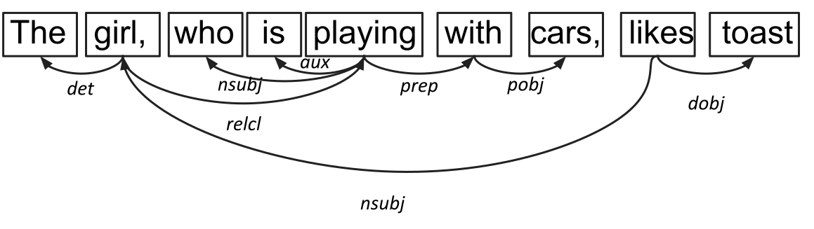
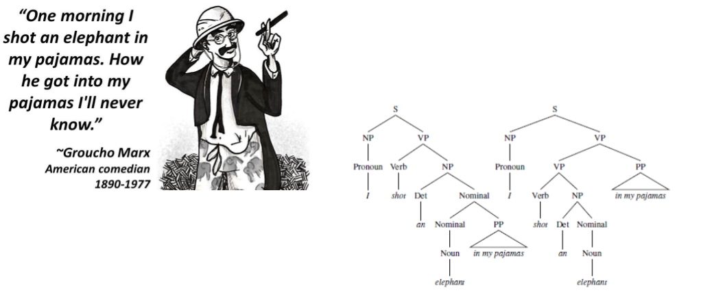

Syntax
John P. McCrae - University of Galway
Course at ESSLLI 2023
Corpus Selection and Construction
Types, tokens and morphology
Types and tokens
- Tokens refer to the individual words in the text
- Types are the distinct words we see in the text
I know that this is simple
6 Tokens, 5 Types
Tokenization
 Source: https://spacy.io/usage/spacy-101
Source: https://spacy.io/usage/spacy-101Non-linguistic tokens
- Hashtags/mentions (#amazing, @john)
- URLs
- Emoticons (:-O, 😀)
Compounds
- bookshelves, bedroom, policeman
- Flachbildschirmfernseher (German: flat screen TV)
- bestuurdersaansprakelijkheidsverzekering (Dutch: drivers' liability insurance)
Aside: What is a word?
- Occurs between spaces (and punctuation)
- Can be a single utterance
- Has a distinct meaning
- Syntactically free
- Has an inflectional paradigm (e.g., plural, past tense, genitive case)
- (Useful as a) headword in a dictionary
Subword tokenization
Maybe a human definition of word is not the best?
Super ##cali ##frag ##il ##istic ##ex ##pi ##ali ##do ##cious
WordPiece (Wu et al., 2016)
- Initially use only characters as words
- Build a probability model on the corpus
- Merge two most probable words
- Repeat until limit of words is reached of likelihood is below a threshold
Morphology
- Lemmatization: Reduce words to their base form
- Stemming: Reduce words to their stem
Morphology Examples
| Word | Lemma | Stem |
|---|---|---|
| cars | car | car |
| caring | care | car |
| taught | teach | taught (!?) |
Stemming is not linguistically motivated
Inflection and Derivation
Inflection captures the lemma and the change that has hap[pened to it
writing = write + PRESENT + PROGRESSIVE
Derivation is how new words are formed
agreement = agree + MENT
Morphological Analysis
- English is quite simple
- Some languages (for example Chinese) have no morphology
- In other languages one word can be a whole sentence
وسيكتبونها /wasayaktubuwnahA/ 'and they will write it'
Example: English Clitics
Example: English Clitics
Clitics are words that are pronounced as part of another word
In particular we will look at _n't_
Does the use of more clitics indicate a more informal text?
Part-of-speech analysis
Part-of-speech tags
| Tag | Description | Example |
|---|---|---|
| ADJ | adjective | yellow, big, international |
| ADP | adposition | with, in, at |
| ADV | adverb | quickly, yesterday, tomorrow |
| AUX | auxiliary | is, has (done), will (do) |
| CCONJ | coordinating conjunction | and, or, but |
| DET | determiner | a, an, the |
| INTJ | interjection | psst, ouch, bravo, hello |
| NOUN | noun | cat, tree, air, beauty |
| NUM | numeral | 1, 2017, one, seventy-seven, IV, MMXIV |
| PART | particle | 's, not |
| PRON | pronoun | I, you, he, she |
| PROPN | proper noun | Mary, John, London, NATO, HBO |
| PUNCT | punctuation | ., (, ), ? |
| SCONJ | subordinating conjunction | if, while, that |
| SYM | symbol | $, %, §, ©, 😝 |
| VERB | verb | work, type, run, speak |
| X | other | sfpksdpsxmsa |
Part-of-speech tagging
Assign a part-of-speech tag to each token
| Token | POS |
|---|---|
| I | PRON |
| am | AUX |
| a | DET |
| linguist | NOUN |
spaCy
For our purposes, we'll use the spaCy library
Example: English genitives
We can now look at the _'s_ genitive
Is this a clitic?
Does the use of more genitives indicate a more informal text?
Parsing
Parsing
Understand the syntactic structure of a sentence by means of the relationships between words
The girl, who is playing with cars, likes toast
Parsing as rewriting
Parsing as rewriting
Parsing as rewriting
Parsing as rewriting
Parsing as rewriting
Parsing as rewriting
Parsing as rewriting
Phrase grammar
Dependency grammar
Syntactic ambiguity
Example: Placement of adverbs
_There is not such thing as an adverb!_
Adverbs are a catch-all category covering several different usages
Many have claimed that adverbs are special version of adjectives
Example: Placement of adverbs
To answer this we will examine if _ly_ adverbs have a different usage pattern than other adverbs
We will define this by what they modify